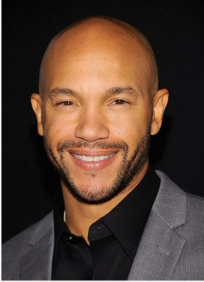

#10954 The Trap

 IMDB-Wertung: 4.5 / 10
IMDB-Wertung: 4.5 / 10  Metascore: 0
Metascore: 0 
A good man (Tip "T.I." Harris) returns home to Atlanta to help save his brother (Mike Epps) and mother's (Loretta Devine) run-down restaurant. A tweek in the chicken's recipe suddenly brings big business to the restaurant...and big problems.
Jahr: 2019
Dauer: 90 Minuten
FSK:
Land: USA Studio: Flavor Unit EntertainmentTonspuren: DD5.1 - ,
Untertitel: Englisch, , Französisch, Deutsch,
Auflösung: 1080p (1920x1080) Größe: 2560 MB
Genre: Komödie
Regisseur: Erik White
Drehbuch: Brandon Broussard, Nile Evans, Hudson Obayuwana, Jana Savage
Soundtrack: Chris Paultre
Darsteller:
 T.I. als Sonny
T.I. als Sonny Mike Epps als Dutch
Mike Epps als Dutch Loretta Devine als Mama Jay
Loretta Devine als Mama Jay Queen Latifah als Dr. Obayuwana
Queen Latifah als Dr. Obayuwana- Teyana Taylor als Sherri
- Meagan Tandy als Sasha
- Joel Rush als Powers
-  Stephen Bishop als K.P.
- D.C. Young Fly als Goo
- Big Boi als Big Boi
- 21 Savage als 21 Savage
- Bruce Bruce als Bruce Bruce
- Kevin Stillwell als Captain Harper
 Nelson Bonilla als Juan
Nelson Bonilla als Juan- Jon Kohler als Chef Bentley
 Michael H. Cole als Accountant
Michael H. Cole als Accountant- Heather McMahan als Poissonier
- Casey Hendershot als Husky Hillbilly
- Victoria Vertuga als Receptionist
- Gregory Nassif St. John als Butler
- Marquita Goings als Cute Cashier
- Marion Blount als Officer 1 (uncredited)
- Quinn Bozza als Cop 2 (uncredited)
 David Dunston als Dope Boy (uncredited)
David Dunston als Dope Boy (uncredited)- Stan B. Lackey als Fighting Restaurant Customer (uncredited)
- Lauren McGregor als Restaurant Patron (uncredited)
- Andre Parr als Stripclub Owner (uncredited)
- Kari Wells als Fondue Lady (uncredited)
- Mila J. als Porsha
- Kelly 'K. Dubb' Walker als Larry
- Lil Duval als Darryl
- Henry Welch als Gus
- John 'B.J.' Bryant als Teeny
- George Bryant als Kyle Phillips Sr.
- Joe Washington als Mayor
- G. Garvin als Bernard Ridley
- Merrill Capps als Saucier
- Brantley Church als Maitre D'
- Messiah Harris als Teenager
- R.J. Orr als Happy Customer
- Lawrence Herring als Restaurant Man
- Demetri Landell als Restaurant Customer (uncredited)
- Demarcus Laney als Visitor (uncredited)
- Joe Anthony Obboye als Patron (uncredited)
- Jojuan Westmoreland als Line Cook (uncredited)
Datei: X:\2019(N-Z)\Trap, The (2019, FSK, 1920x1080).mkv seit 08.04.2019
Festplatte: HD 2018(G-Z)-2019(A-Z)
 Es gibt insgesamt 62 Filme in der Gruppe '2019(N-Z)'
Es gibt insgesamt 62 Filme in der Gruppe '2019(N-Z)'